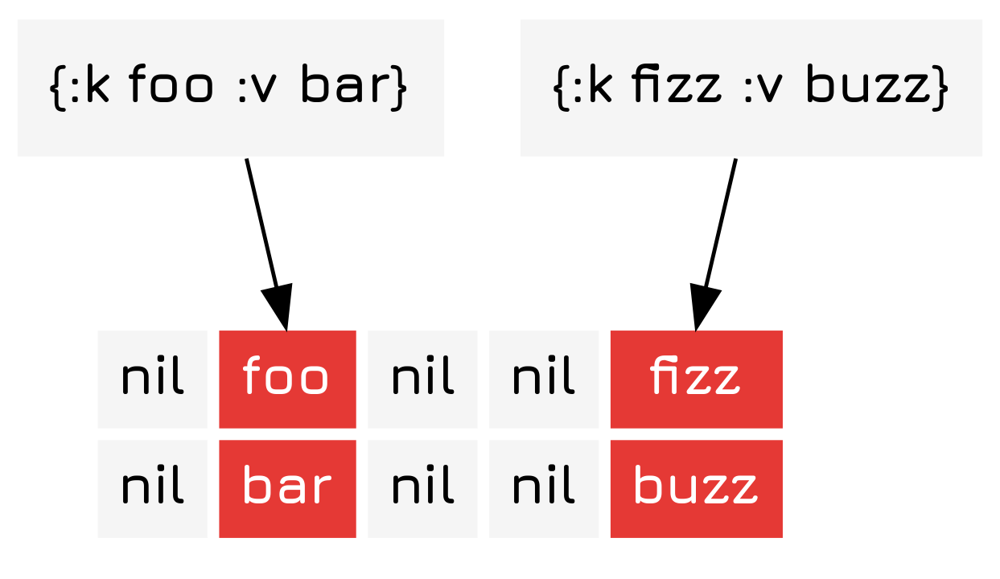
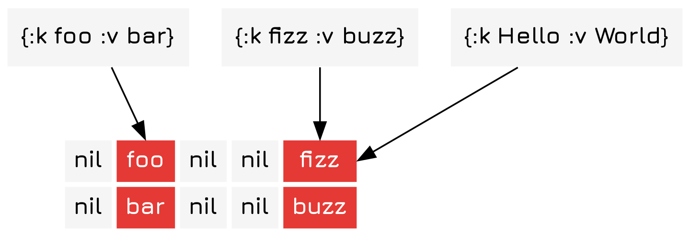
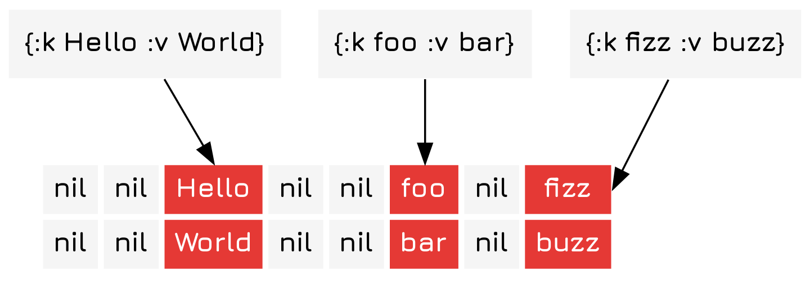
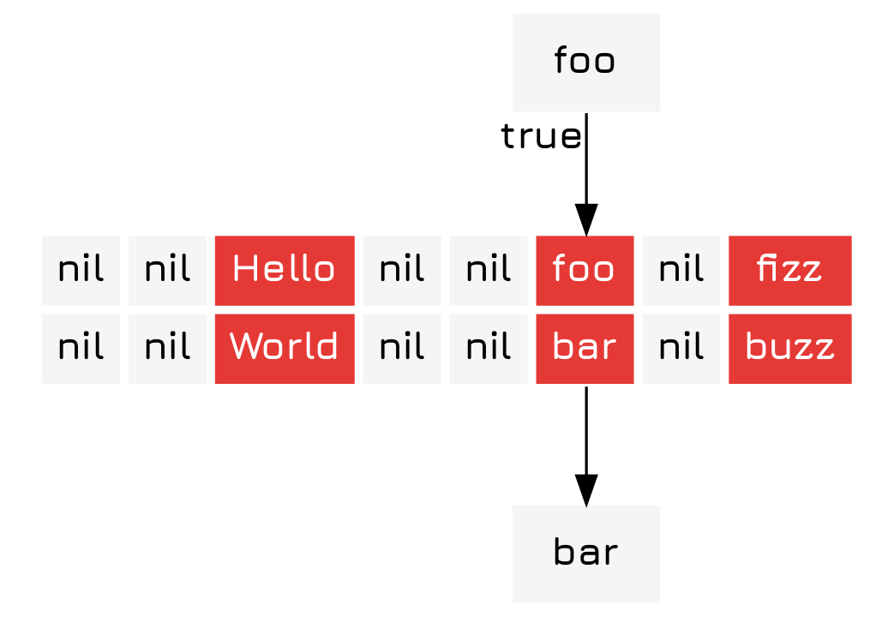

Implementing Hash Maps
Table of Contents
Introduction
A hashmap is a type of key-value store that uses a hash function to index.
Algorithm
A hashmap is fairly simple, but in essence you have an array of 2-tuples with the first containing a key and the second containing a value. To insert into the array you first hash the key and then take the modulus of the key with respect to the length of the array.

However, as you might imagine, there can occasionally be collisions, like this.

To solve this you can either resize the array, shove the collided items in a sub-map 1 Which will over time cause the hash map to have \(O(log(n))\) search times., or shift them over in some constant direction. Here we choose to resize the array, which is an \(O(n)\) operation.

To find items in the array you first find the index of the key just like you did for insertion and then you compare the key to the key in the 2-tuple you stored at that index. If it is the same, then you return the value from the tuple.

Implementation
Hash Function
This function simply multiplies the list of numbers together with a pad, creating a somewhat random number. It is the exact same as the one in my Implementing Bloom Filters tutorial.
(defn hash-obj [obj] (let [pad 3484115242153581271N] (->> (str obj) (map int) (apply (fn [x & xs] (cons (mod (*' x pad) Long/MAX_VALUE) xs))) (reduce #(mod (*' %1 %2 pad) Long/MAX_VALUE)) long)))
The Hashmap Constructor
To define a hash map we first have to define a simple object for it and a constructor that creates an array of nils of the relevant size.
(defrecord HashMap [arr size]) (defn new-hashmap [size] (->HashMap (vec (repeat size nil)) size))
Adding Items
Now that we can get stuff from the hashmap, let's consider adding stuff to it as well. Here we add a function that takes the map, a key, and a value, and then adds that to the hash map. Should a collision occur it resizes.
(defn add-hash [{:keys [arr size] :as map} key val] (if (nil? (nth arr (mod (hash-obj key) size))) (assoc-in map [:arr (mod (hash-obj key) size)] [key val]) (let [new-hashmap (new-hashmap (* 2 size))] (->> arr (filter identity) (cons [key val]) (reduce (fn [new-map [key val]] (add-hash new-map key val)) new-hashmap)))))
Here we also see the sole weakness of the hash map, either resizing has to occur or you have to accept degraded performance once a certain size has been reached. Resizing is, while deterministic, not idempotent and it is absolutely possible that it could go on infinitely. 2 This is because (ignoring for a moment that our hash function is terrible and probably not properly random) the probability of a collision should be equal to the fraction of the map that is filled. This probability is never exactly 0 for an insertion (and of course resizing itself involves insertions), leading to possible dramatic growth in some cases. You also will not be able to fill all the indices in the hash map, meaning that each component will inevitably have only some set of the items.
To demonstrate the resizing ability, consider the execution of the following.
First we define a new map.
(def hm (new-hashmap 5))
Then we start adding opinions to it about different programming languages.
(def hm-with-opinions (-> hm (add-hash "Clojure" "Is extremely awesome.") (add-hash "JavaScript" "Kind of sucks.")))
Which gives us this, and as you can see the two items have been added at their respective indices.
#hm-demo.HashMap{:arr [["Clojure" "Is extremely awesome."] nil nil ["Javascript" "Kind of sucks."] nil], :size 5}
Then we just insert my opinion on PHP.
(add-hash hm-with-opinions "PHP" "Oh god no, please spare me from this hell.")
And now, as you can see, after adding the last element the hasmap automatically resizes, doubling in size.
{:arr [["PHP" "Oh god no, please spare me from this hell."] nil nil nil nil ["Clojure" "Is extremely awesome."] nil nil ["JavaScript" "Kind of sucks."] nil], :size 10}
Getting Items
The get-hash function simply takes the hahmap and a key. Should the key correspond with a value in the map it returns true, else nil or the value provided in not-found, which replicates the functionality of the native get function.
(defn get-hash ([map key] (get-hash map key nil)) ([{:keys [arr size]} key not-found] (let [idx (mod (hash-obj key) size) item (nth arr idx )] (if (or (nil? item) (not= key (first item))) not-found (second item)))))
Conclusion
Hash maps are a great way to store key-value pairs with a constant lookup time. However, due to their limited size-efficiency they can have somewhat non-deterministic insertion times, which can be painful if you are working with very large maps.